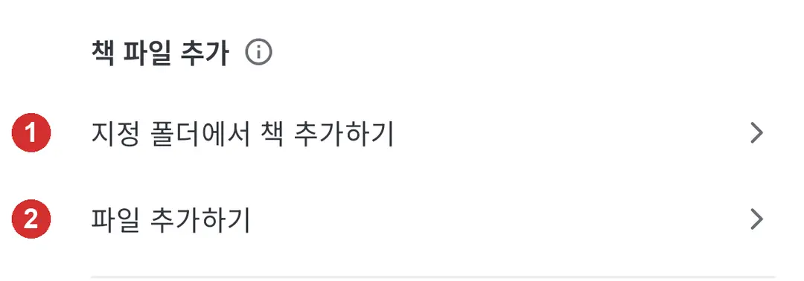
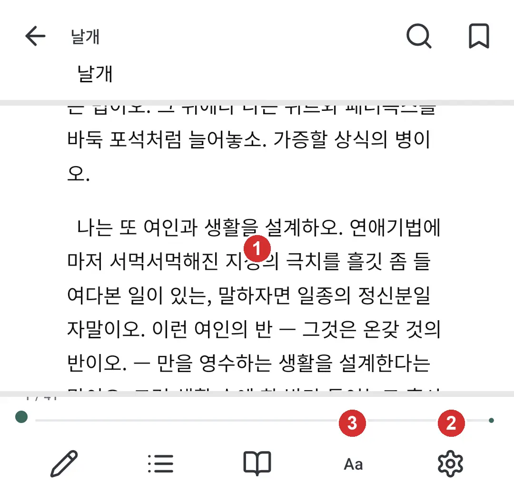
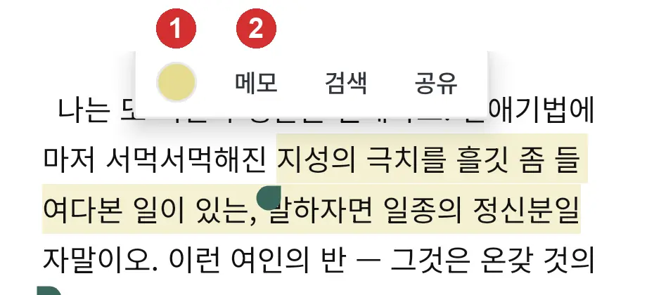
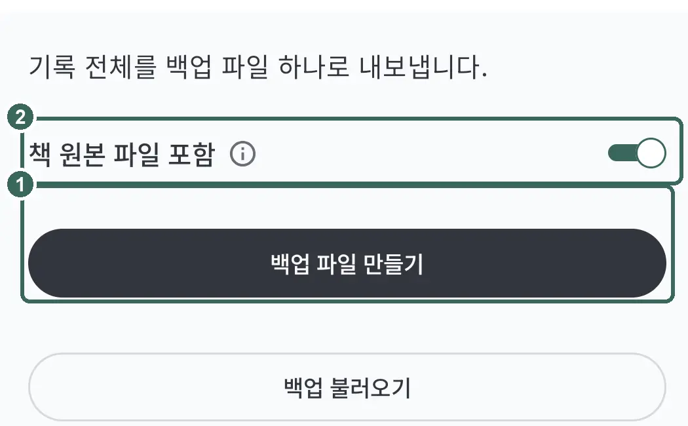

사용법
최종 수정일: 2026년 9월 12일
책 넣기
My의 '책 파일 추가'에서 '파일 추가하기'를 누릅니다. EPUB·PDF·TXT 형식은 자동으로 판별합니다.
여러 권은 '지정 폴더에서 책 추가하기'에서 고릅니다. 등록한 파일은 앱 안에 복사됩니다.

같은 작품에 파일을 더 붙이려면 작품 정보의 '파일' 줄에서 '+ 파일 추가'를 누릅니다.
표지를 누르고 '파일 표지 중에서 고르기'나 '갤러리에서 고르기'를 누릅니다.

읽기·보기 설정
책을 열고 화면 가운데를 누르면 메뉴가 열립니다. 다시 누르면 닫힙니다.

'뷰어 설정'의 '페이지 넘김 터치 영역'에서 방향을 고릅니다. 기본인 '좌우'는 왼쪽이 이전 쪽, 오른쪽이 다음 쪽이며 '상하'는 위가 이전 쪽, 아래가 다음 쪽입니다.
EPUB·TXT는 '보기 설정'에서 글꼴·글자 크기·간격·배경을 조절합니다. 원본 PDF는 글자 크기를 바꾸지 않습니다.
'스크롤 보기'에서는 화면을 밀어 읽습니다. 가장자리 터치로는 쪽을 넘기지 않습니다.

형광펜·메모·책갈피
EPUB·TXT에서 문장을 길게 누르고 범위를 조절한 뒤 색 버튼을 누릅니다. 남긴 형광펜을 누르면 색을 바꿀 수 있습니다.
문장을 고른 뒤 '메모'를 누르고 내용을 적어 '저장'합니다.

메뉴의 책갈피 버튼을 누르면 위치가 남고, 다시 누르면 해제됩니다. 남긴 기록은 '독서노트'에서 확인합니다.

원본 PDF는 'EPUB으로 변환해서 읽기'로 변환한 뒤 형광펜을 남깁니다. 글자 없는 이미지 스캔본은 변환되지 않습니다.
감상 쓰기
감상 첫머리에 10화·17권·203쪽을 적고 공백이나 줄바꿈을 넣습니다. !10·@17·p203으로도 적습니다.
여러 화는 10-12화 또는 !10-12로 적습니다. 표시 뒤에 공백이나 줄바꿈을 넣고 감상을 이어 씁니다.

회차 표시 없이 적으면 총감상으로 남습니다. 작품 전체에 대한 한마디는 맨 위 '전체평'에서 씁니다.

서재 정리·책장
서재의 '책장 목록'에서 '+ 새 책장 추가'로 책장을 만듭니다. 작품을 길게 눌러 '책장에 담기'를 고릅니다.
'작품 정보 변경'에서 상태를 바꾸면 책 파일이 있는 작품은 상태별 책장에 모입니다(여러 작품은 선택한 뒤 '독서 상태 변경'). '읽는 중'에는 '연재 중'·'재독', '완독'에는 '연재 완독'도 모입니다.

처음에는 '시작 전'·'하차'·'기록만' 책장이 숨겨져 있습니다. '책장 목록'의 '편집'에서 표시할 책장을 고릅니다.

'기록만'에는 책 파일 없는 작품이 모입니다. '책장에서 빼기'를 해도 작품과 기록은 남습니다.
달력·통계
뷰어로 읽거나 감상을 남기면 읽은 날이 기록됩니다. '달력'에서 날짜를 누르고 '작품 추가'로 빠진 기록을 채웁니다.

'연간'에서는 한 해의 읽은 날을 봅니다. '연속 읽은 날'에서는 현재와 최장 기록을 봅니다.
'통계'의 '이달 요약'에서 '읽은 작품'과 '감상 수'는 감상 기록 기준입니다. '독서일'은 읽은 날의 수입니다.

백업
My의 '백업'에서 '백업 파일 만들기'로 기록과 설정을 저장합니다. 암호는 8자 이상으로 정하며, 잊으면 백업을 복구하지 못합니다.
'책 원본 파일 포함'은 처음에 켜져 있습니다. 끄면 복원한 뒤 책 파일을 다시 등록해야 합니다.

'백업 불러오기'에서 파일을 확인하고 '이 백업으로 복원'을 누릅니다. 현재 기록과 설정이 백업 내용으로 바뀝니다.

이잉크 기기에서
전자잉크 화면에서는 My의 '앱 전체 고대비 (이잉크)'를 켭니다. 밝은 테마에서만 글자와 선의 대비를 높입니다.

읽기 화면의 '뷰어 설정'에서 '이잉크 모드'를 따로 켭니다. 흰 배경과 검은 글자로 바뀌며 화면 움직임과 페이지 전환 효과를 줄입니다.
잔상이 남으면 '주기적 전체 새로 고침'을 켜고 '전체 새로 고침 주기'를 정합니다. 정한 쪽수마다 화면 전체를 다시 그립니다.
